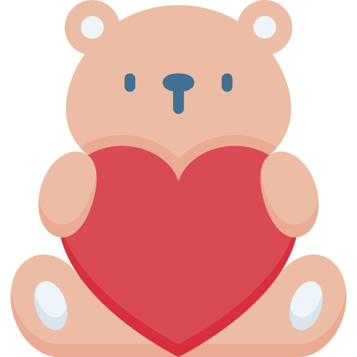

Oye! Has abierto mi sobre, ahora estas comprometida a leerlo puedes hacerlo detenimente y talvez te haga recordar un lindo momento...
Oye! Has abierto mi sobre, ahora estas comprometida a leerlo puedes hacerlo detenimente y talvez te haga recordar un lindo momento...
Querida Odalys la chica en la que pienso cada día al despertar y que todos los días me haces recordar lo lindo que se siente quererte tanto. Sin que te des cuenta has cambiado mi vida de una manera que no puedo vivirla sin que tu estes en ella
El día que te conoci me quede perplejo, nunca habia visto a una chica tan hermosa, tan intrigante y verdadera, mostrandote tal como eres que no quise perder la oportunidad de concoerte porque en ese momento algo en mi me dijo que seguramente tu eres quien le dara sentido a mi vida y si que lo has hecho.
Hay un mito que no lo creo del todo, y dice que en tan solo 4 minutos puedes enamorarte, pero te lo digo porque no paso ni 1 minuto cuando yo ya lo estaba por ti.
8 de Febrero del 2025
Recuerdas esa foto? Fue la primera vez que salimos juntos no se en que momento pero pasamos juntos ese día como si hubieramos salido muchas veces antes, fue muy bonito, senti que todo iba natural como si ya nuestras salidas estaban escritas.
14 de Febrero del 2025
El Primer San Valentin junto a ti, aun recuerdo ese que me sentia tan nervioso y solo pensaba en el regalo que tenia para ti, fue poco pero con mucho cariño, recuerdo ese día como abrazabas a payulina y pensando lo cuanto deseo ser yo quien abrazaras asi.
No olvido ese día cuando nos acostamos viendonos de frente y descansar tomados de las manos, desde entonces antes de dormir pienso en como te mirabas en ese momento... Tan hermosa ❤️
Dos días despues de pedirte si puedo yo un ser mortal ser tu novio. 7 de Marzo del 2025
28 de Marzo del 2025
Haz tocado mi corazón y escuchado latir en mis días mas alegres y en los momentos donde mas te he necesitado, siempre estabas a mi lado... Prometo yo estar a tu lado siempre.
Nuestra ultima foto tomada el 16 de Mayo del 2025.
Solo puedo decir que Te quiero Odalys, quiero cada centimentro de ti, quiero cada sentimiento de ti y quiero siempre quererte. Gracias mi vida✨
Escribir sobre el amor es escribir sobre ti